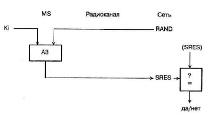
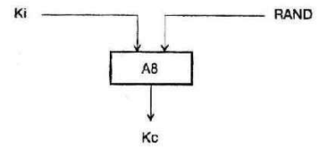

SIМ-карта. Каждый абонент мобильной связи стандарта GSM на время пользования системой сотовой связи получает стандартный модуль подлинности абонента, так называемую SIМ-карту (SIМ –Subscriber Identity Module, SIM –card). В аппаратах (мобильных телефонах) стандарта GSM используется унифицированная съемная SIМ-карта, одинаковая для всех стандартов GSM:GSM 900, GSM 1800 и GSM 1900 и выполненная в двух вариантах:
- стандартная (стандарт ISO) – размером 55х85 мм, типа банковой кредитной карты;
- чаще, миниатюрная, «вставная» (plug-in) размером 15х25 мм.
Толщина SIМ-карта в обоих случаях менее 1 мм.
MS без SIМ-карты неработоспособна, хотя и в этом случае с него можно сделать экстренные вызовы по номеру 112 – международному номеру экстренной помощи.
Модуль SIМ-карты вручается одновременно с мобильным телефоном и в принципе позволяет вести разговор с любого аппарата стандарта GSM, в том числе и с таксофонного. SIМ-карта содержит следующую информацию:
PIN (Personal Identification Number) – персональный идентификационный номер абонента, так называемый PIN-код;
IMSI (International Mobile Subscriber Identity) – международный идентификатор абонента мобильной связи;
Ki – индивидуальный ключ аутентификации абонента;
A3– индивидуальный алгоритм аутентификации абонента;
AS – алгоритм вычисления ключа шифрования.
После включения MS с установленной SIМ-картой абонент обязан, прежде всего, снять блокировку последней и ввести PIN-код, известный только абоненту, который должен служить защитой от несанкционированного использования SIМ-карты, например при утере. После трех неудачных попыток набора PIN-код SIМ-карта блокируется, и блокировка может быть снята либо набором дополнительного кода – персонального кода разблокировки PUK (Personal Unbloc king Key), либо по команде с центра коммутации. PIN-код может быть изменен по усмотрению абонента и по соглашению с оператором сотовой сети.
Кроме того, на SIМ-карте имеется некоторый объем доступной для абонента оперативной памяти, позволяющий записать до 100 номеров телефонов с комментариями (например, с именами абонентов) и до 10 текстов коротких сообщений.
Когда SIМ-карта вынимается из MS, она сохраняет всю содержащею в ней информацию:
персональные идентификаторы;
ключи;
шифры и пороли;
записанные абонентом номера ТЛФ и сообщений, и может работать с другими MS стандарта GSM.
Таким образом, SIМ-карта как бы «персонализует» абонентский аппарат MS, в которой она устанавливается.
Аспекты безопасности в стандарте GSM. Сотовые системы подвижной связи нового поколения в состоянии принять всех потенциальных пользователей, если будут гарантированы безопасность связи: секретность и аутентификация. Секретность должна исключить возможность извлечения информации из каналов связи кому-либо, кроме санкционированного получателя. Проблема аутентификации заключается в том, чтобы помешать кому-либо, кроме санкционированного пользователя (отправителя), изменить канал, то есть получатель должен быть уверен, что в настоящий момент он принимает сообщение от санкционированного пользователя. Основным способом обеспечения секретности является шифрование. Относительно новая концепция - использование шифрования как способа аутентификации сообщений.
Аутентификация сообщений через шифрование осуществляется за счет включения в текст так называемого кода идентификации (то есть фиксированного или зависящего от передаваемых данных слова, которое знают отправитель и получатель или которое они могут выделить в процессе передачи). Получатель расшифровывает сообщение, путем сравнения получает удостоверение, что принимаемые данные являются именно данными санкционированного отправителя.
К системе шифрования предъявляются следующие основные требования:
нелинейные связи между исходным текстом и зашифрованным текстом;
изменение параметров шифрования во времени.
Если алгоритмы шифрования отвечают первому требованию, то, не зная ключа, исключается возможность изменить код идентификации, чтобы избежать обнаружения факта несанкционированного доступа. Второе требование исключает возможность нарушения работы системы за счет воспроизведения "обнаружителем" принятого ранее и записанного в память сообщения.
Один путь обеспечения этих требований - применение синхронных систем передачи, но при этом необходимы системы цикловой и тактовой синхронизации, что во многих случаях неприемлемо.
Второй путь - включение в информационную последовательность (каждое сообщение) временных меток так, чтобы зашифрованные данные были бы однозначно с ними связаны.
Алгоритмы шифрования делятся на два класса [1,5-7];
классические алгоритмы;
алгоритмы с открытым ключом.
Классические алгоритмы используют один ключ для шифрования-дешифрования. Алгоритмы с открытым ключом используют два ключа: первый - для перехода от нешифрованного текста к шифрованному; второй - для обратного перехода от шифрованного к нешифрованному. Причем знание одного ключа не должно обеспечить обнаружение второго ключа. В этих алгоритмах один из ключей, обычно используемый для шифрования, можно сделать общим, и только ключ, используемый для расшифровки, должен быть засекречен. Эта особенность очень полезна для снижения сложности протокола и интеграции структур шифрования в сетях связи.
Алгоритмы шифрования с открытым ключом построены на определении односторонней функции, то есть некоторой функции f, такой, что для любого х из ее области определения f (х) легко вычислима, однако практически для всех у из ее области значений нахождение х, для которого y=f(x) вычислительно, не осуществимо[6-7]. То есть, односторонняя функция является отдельной функцией, которая легко рассчитывается ЭВМ в приемлемом объеме времени, но время расчета обратной функции в существующих условиях недопустимо большое.
Первый алгоритм шифрования с общим ключом был назван RSA (первые буквы фамилий авторов Rivest, Shamir, Adieman). Алгоритм базируется на двух функциях Е и D, связанных соотношением:
D (Е(*) = Е (D(*)).
Одна из этих функций используется для шифрования сообщений, другая - для дешифрования. Секретность алгоритма основана на том, что знание функции Е (или D) не открывает легкого способа вычисления D (или Е). Каждый пользователь делает общей функцию Е и хранит в секрете функцию D, то есть для пользователя Х есть открытый ключ Ех и секретный Dx.
Два пользователя А и В могут использовать алгоритм RSA, чтобы передать любое зашифрованное сообщение. Если абонент А хочет отправить сообщение М абоненту В, то он может сделать это следующим образом:
- зашифровать сообщение М;
- подписать сообщение М;
- зашифровать и подписать М.
В первом случае: А обеспечивает преобразование М, используя открытый ключ С = Ев (М)и посылает его абоненту В. В принимает С и вычисляет db (с) = db (Ев (М)) = М.
Во втором случае: А подписывает М посредством вычисления F= Da (М) и посылает F абоненту В (эти операции может осуществлять только пользователь А, которому известен секретный ключ Da). В получает F и вычисляет Еа (F) =Еа (Da (М)) = М.В теперь известно, что сообщение М действительно послано пользователем А. В этом случае секретность сообщения М не гарантируется, так как все могут осуществить такую же операцию с использованием общего ключа Еа.
В третьем случае: А вычисляет F = Da (М) и С = Ев (F) = Ев (Da (М); А посылает С к В. В получает С и вычисляет db (с) = db (Ев (F)) = Da (М); В может теперь легко получить М, вычислив Еа (Da (М)) = М.
До операции шифрования каждое сообщение М должно разделяться на блоки фиксированной длины, затем каждый блок кодируется как совокупность фиксированного числа цифр. RSA кодер оперирует такими отдельными блоками в каждом цикле кодирования. Полное описание алгоритма RSA изложено, например, в [8].
Алгоритм шифрования с открытым ключом RSA обеспечивает высокую степень безопасности передачи речевых сообщений и рекомендован к использованию в цифровых системах подвижной радиосвязи нового поколения.
В стандарте GSM термин "безопасность" понимается как исключение несанкционированного использования системы и обеспечение секретности переговоров подвижных абонентов. Определены следующие механизмы безопасности в стандарте GSM [8]:
аутентификация;
секретность передачи данных;
секретность абонента;
секретность направлений соединения абонентов.
Защита сигналов управления и данных пользователя осуществляется только по радиоканалу. Режимы секретности в стандарте GSM определяются Рекомендациями, приведенными в табл.3.1.
Таблица 3.1
Режимы секретности в стандарте GSM
|
Аспекты секретности |
Определяет характеристики безопасности, применяемые в сетях GSM. Регламентируется их применение в подвижных станциях и сетях |
|
Секретность, связанная с функциями сети |
Определяет функции сети, необходимые для обеспечения характеристик безопасности, рассматриваемых в рекомендациях GSM 02.09 |
|
Алгоритмы секретности |
Определяет криптографические алгоритмы в системе связи |
|
Модули подлинности абонентов (SIM) |
Определяет основные характеристики модуля SIM |
Рассмотрим последовательно механизмы безопасности в стандарте GSM, общий состав секретной информации, а также ее распределение в аппаратных средствах GSM системы. При этом будем использовать термины и обозначения, принятые в рекомендациях GSM.
Механизмы аутентификации. Для исключения несанкционированного использования ресурсов системы связи вводятся и определяются механизмы аутентификации - удостоверения подлинности абонента. Каждый подвижный абонент на время пользования системой связи получает стандартный модуль подлинности абонента (SIM-карту), который содержит:
- международный идентификационный номер подвижного абонента (IMSI);
- свой индивидуальный ключ аутентификации (Ki);
- алгоритм аутентификации (A3).
С помощью заложенной в SIM информации в результате взаимного обмена данными междуподвижной станцией и сетью осуществляется полный цикл аутентификации и разрешается доступ абонента к сети.
Процедура проверки сетью подлинности абонента реализуется следующим образом. Сеть передает случайный номер (RAND) на подвижную станцию. Подвижная станция определяет значение отклика (SRES), используя RAND, Ki и алгоритм A3:SRES = Ki [RAND].
Подвижная станция посылает вычисленное значение SRES в сеть, которая сверяет значение принятого SRES со значением SRES, вычисленным сетью. Если оба значения совпадают, подвижная станция может осуществлять передачу сообщений. В противном случае связь прерывается, и индикатор подвижной станции должен показать, что опознавание не состоялось.
По причине секретности вычисление SRES происходит в рамках SIM. Несекретная информация (такая как Ki) не подвергается обработке в модуле SIM. Процедура аутентификации иллюстрируется рис. 3.1.

Рис.3.1. Процедура аутентификации
Секретность передачи данных. Ключ шифрования. Для обеспечения секретности передаваемой по радиоканалу информации вводится следующий механизм защиты. Все конфиденциальные сообщения должны передаваться в режиме защиты информации. Алгоритм формирования ключей шифрования (А8) хранится в модуле SIM. После приема случайного номера RAND подвижная станция вычисляет, кроме отклика SRES, также и ключ шифрования (Кс), используя RAND, Ki и алгоритм А8 (рис.3.2):
Кс = Ki [RAND].

Рис.3.2. Вычисление ключа шифрования (Кс)
Ключ шифрования Кс не передается по радиоканалу. Как подвижная станция, так и сеть вычисляют ключ шифрования, который используется другими подвижными абонентами. По причине секретности вычисление Кс происходит в SIM.
Числовая последовательность ключа шифрования.Кроме случайного числа RAND сеть посылает подвижной станции числовую последовательность ключа шифрования. Это число связано с действительным значением Кс и позволяет избежать формирование неправильного ключа. Число хранится подвижной станцией и содержится в каждом первом сообщении, передаваемом в сеть. Некоторые сети принимают решение о наличии числовой последовательности действующего ключа шифрования в случае, если необходимо приступить к опознаванию или, если выполняется предварительное опознавание, используя правильный ключ шифрования. В некоторых случаях это допущение реально не обеспечивается.
Установка режима шифрования. Для установки режима шифрования сеть передает подвижной станции команду CMC (Ciphering Mode Command) на переход в режим шифрования. После получения команды CMC подвижная станция, используя имеющийся у нее ключ, приступает к шифрованию и дешифрованию сообщений. Поток передаваемых данных шифруется бит за битом или поточным шифром, используя алгоритм шифрования А5 и ключ шифрования Кс.
Обеспечение секретности абонента.Для исключения определения (идентификации) абонента путем перехвата сообщений, передаваемых по радиоканалу, каждому абоненту системы связи присваивается "временное удостоверение личности" - временный международный идентификационный номер пользователя (TMSI), который действителен только в пределах зоны расположения (LA). В другой зоне расположения ему присваивается новый TMSI. Если абоненту еще не присвоен временный номер (например, при первом включении подвижной станции), идентификация проводится через международный идентификационный номер (IMSI). После окончания процедуры аутентификации и начала режима шифрования временный идентификационный номер TMSI передается на подвижную станцию только в зашифрованном виде. Этот TMSI будет использоваться при всех последующих доступах к системе. Если подвижная станция переходит в новую область расположения, то ее TMSI должен передаваться вместе с идентификационным номером зоны (LAI), в которой TMSI был присвоен абоненту.
Обеспечение секретности в процедуре корректировки местоположения. При выполнении процедуры корректировки местоположения по каналам управления осуществляется двухсторонний обмен между MS и BTS служебными сообщениями, содержащими временные номера абонентов TMSI. В этом случае в радиоканале необходимо обеспечить секретность переименования TMSI и их принадлежность конкретному абоненту.
Рассмотрим, как обеспечивается секретность в процедуре корректировки местоположения в случае, когда абонент проводит сеанс связи и при этом осуществляет перемещение из одной зоны расположения в другую. В этом случае подвижная станция уже зарегистрирована в регистре перемещения VLR с временным номером TMSI, соответствующим прежней зоне расположения. При входе в новую зону расположения осуществляется процедура опознавания, которая проводится по старому, зашифрованному в радиоканале TMSI, передаваемому одновременно с наименованием зоны расположения LAI. LAI дает информацию центру коммутации и центру управления о направлении перемещения подвижной станции и позволяет запросить прежнюю зону расположения о статусе абонента и его данные, исключив обмен этими служебными сообщениями по радиоканалам управления.
Общий состав секретной информации и ее распределение в аппаратных средствах GSM. В соответствии с рассмотренными механизмами безопасности, действующими в стандарте GSM, секретной считается следующая информация:
RAND - случайное число, используемое для аутентификации подвижного абонента;
значение отклика - ответ подвижной станции на полученное случайное число;
индивидуальный ключ аутентификации пользователя, используемый для вычисления значения отклика и ключа шифрования;
ключ шифрования, используемый для шифрования/дешифрования сообщений, сигналов управления и данных пользователя в радиоканале;
алгоритм аутентификации, используемый для вычисления значения отклика из случайного числа с использованием ключа Ki;
алгоритм формирования ключа шифрования, используемый для вычисления ключа Кс из случайного числа с использованием ключа Ki;
алгоритм шифрования/дешифрования сообщений, сигналов управления и данных пользователя с использованием ключа Кс;
номер ключевой последовательности шифрования, указывает на действительное число Кс, чтобы избежать использования разных ключей на передающей и приемной сторонах;
временный международный идентификационный номер пользователя.
В табл.3.2 показано распределение секретной информации в аппаратных средствах системы связи GSM.
Таблица 3.2
Распределение секретной информации в аппаратных средствах
системы связи GSM
|
NN п.п. |
Аппаратные средства |
Вид секретной информации |
|
1 |
Подвижная станция (без SIM) |
А5 |
|
2 |
Модуль подлинности абонента (SIM) |
A3; А8; IMSI; Ki; TMSI/LAI; Kc/CKSN |
|
3 |
Центр аутентификации (AUC) |
A3; А8; IMSI/Ki |
|
4 |
Регистр местоположения (HLR) |
Группы IMSI/RAND/SRES/Kc |
|
5 |
Регистр перемещения (VLR) |
Группы IMSI/RAND/SRES/Kc, IMSI/TMSI/LAI/Kc/CKSN |
|
6 |
Центр коммутации (MSC) |
А5, TMSI/IMSI/Kc |
|
7 |
Контроллер базовой станции (BSC) |
А5, TMSI/IMSI/Kc*** |
Обеспечение секретности при обмене сообщениями между HLR, VLR и MSC. Основным объектом, отвечающим за все аспекты безопасности, является центр аутентификации (AUC). Этот центр может быть отдельным объектом или входить в состав какого-либо оборудования, например, в регистр местоположения (HLR). Как управлять AUC будет решать тот, кому будет поручена эксплуатация сети. Интерфейс GSM с AUC не определен.
AUC может решать следующие задачи:
формирование индивидуальных ключей аутентификации пользователей Ki и соответствующих им международных идентификационных номеров абонентов (IMSI);
формирование набора RAND/SRES/Kc для каждого IMSI и раскрытие этих групп для HLR при необходимости.
Если подвижная станция переходит в новую зону расположения с новым VLR, новый VLR должен получить секретную информацию об этой подвижной станции. Это может быть обеспечено следующими двумя способами:
подвижная станция проводит процедуру идентификации по своему международному номеру IMSI. При этом VLR запрашивает у регистра местоположения HLR группы данных '' RAND/SRES/Kc, принадлежащих данному IMSI;
подвижная станция проводит процедуру аутентификации, используя прежний временный номере TMSI с наименованием зоны расположения LAI. Новый VLR запрашивает прежний VLR для посылки международного номера IMSI и оставшихся групп из RAND/SRES/Kc, принадлежащих этим TMSI/LAI, если подвижный абонент остается на более длительный период в VLR, тогда после некоторого количества доступов с аутентификацией VLR из соображений секретности потребует новые группы RAND/SRES/Kc от HLR. Все эти процедуры определены в рекомендации GSM 09.02.
Проверка аутентификации выполняется в VLR. VLR посылает RAND на коммутационный центр (MSC) и принимает соответствующие отклики SRES. После положительной аутентификации TMSI размещается с IMSI. TMSI и используемый ключ шифрования Кс посылаются в центр коммутации (MSC). Эти же процедуры определяются в рекомендации GSM 09.02.
Передача секретной информации по радиоканалу уже описана в предыдущих разделах и определена в рекомендации GSM 04.08.
Модуль подлинности абонента. Введение режима шифрования в стандарте GSM выдвигает особые требования к подвижным станциям, В частности, индивидуальный ключ аутентификации пользователя Ki, связанный с международным идентификационным номером абонента IMSI, требует высокой степени защиты. Он также используется в процедуре аутентификации.
Модуль подлинности абонента SIM содержит полный объем информации о конкретном абоненте. SIM реализуется конструктивно в виде карточки с встроенной электронной схемой. Введение SIM делает подвижную станцию универсальной, так как любой абонент, используя свою личную SIM-карту, может обеспечить доступ к сети GSM через любую подвижную станцию.
Несанкционированное использование SIM исключается введением в SIM индивидуального идентификационного номера (PIN), который присваивается пользователю при получении разрешения на работу в системе связи и регистрации его индивидуального абонентского устройства.
Основные характеристики модуля SIM определены в Рекомендации GSM 02.17. Состав секретной информации, содержащейся в SIM, показан в табл.3.2.
В заключение следует отметить, что выбранные в стандарте GSM механизмы секретности и методы их реализации определили основные элементы передаваемых информационных блоков и направления передачи, на которых должно осуществляться шифрование: (RAND/SRES/Kc от HLR к VLR; RAND и SRES - в радиоканале). Для обеспечения режима секретности в стандарте GSM решены вопросы минимизации времени соединения абонентов. При организации систем сотовой радиосвязи по стандарту GSM имеется некоторая свобода в применении аспектов безопасности. В частности, не стандартизованы вопросы использования центра аутентификации AUC (интерфейс с сетью, структурное размещение AUC в аппаратных средствах). Нет строгих рекомендаций на формирование закрытых групп пользователей и системы приоритетов, принятых в GSM. В этой связи в каждой системе связи, использующей стандарт GSM, эти вопросы решаются самостоятельно.